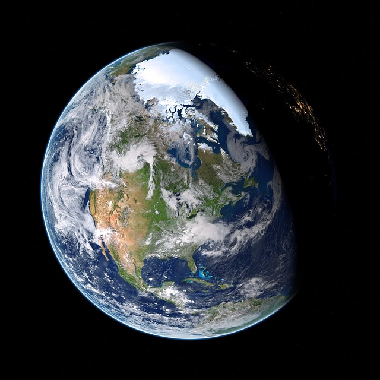

Earth
Earth
is the third planet from the Sun and is the largest of the terrestrial planets. The Earth is the only planet in our solar system not to be named after a Greek or Roman deity. The Earth was formed approximately 4.54 billion years ago and is the only known planet to support life.
More about Earth hereEarth Planet Profile
Equatorial Diameter: 12,756 km
Polar Diameter: 12,714 km
Mass: 5.97 × 10^24 kg
Moons: 1 (The Moon)
Orbit Distance: 149,598,262 km (1 AU)
Orbit Period: 365.24 days
Surface Temperature: -88 to 58°C